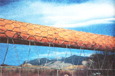
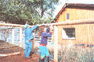
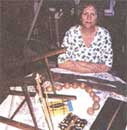

COUNTRY LORE
Chicken Wire Discourages Horses from Chewing Fence Poles
Growing up in California, I learned at an early age that water is precious. The first time I slept over at a friend's house, her mother asked me why I used a cup of water to brush my teeth. With the innocence of a seven-year-old, I asked her why she didn't. Water prudence is as natural to me as breathing. Beyond installing aerators on all my faucets, constantly prowling for dreaded leaks, and using low-flow toilets, I found a relatively inexpensive and effective aid: bathing gloves. These gloves are similar in purpose to loofah sponges but they don't mildew. I now buy less soap and spend less time in the shower, with no sacrifice of cleanliness. I have found these gloves in several different national stores, and have included them in gift baskets for family and friends.
-Kate Christiansen
Norman, OK
My son was away in the service on his nineteenth birthday, but I sent him a card, a present, and a birthday cake. I had heard of mailing cakes to servicemen that arrive all in crumbs, but I devised this method which should be useful to anyone who wants to mail a homemade cake.
The solution is to bake your cake in cans. One-pound coffee cans with snaptop plastic lids are perfect. Actually, any reasonably sized can with a nice snap-top lid is great. Make sure you line the can with waxed paper or aluminum foil, and pour the batter in to about % level before baking it in the usual way. Select a solid type of cake such as a date cake, applesauce pound cake, etc. After the cake is baked, allow it to cool thoroughly before putting on the lid (which helps prevent "sweating" and sogginess), then decorate the outside of the can with gift wrap paper or colorful scraps of wallpaper. Wrap the whole thing in clear plastic tied at the top with a ribbon. Pack it in a box and send it. 1t will arrive safe in one piece and, hopefully, delicious. But that part is up to you.
-Kay Haugaard
Pasadena, CA
Many horses chew on wooden fences, especially if they are confined in a small area. Horses that grow up in large pastures and have room to roam are not as apt to develop the wood-chewing habit. But almost every horse that starts life in a small pen or pasture, corral, or stall will chew wood, primarily because of boredom. Some horses are such "beavers" that they can ruin a good fence in a very short time.
Wood preservatives, old motor oil, and foul-tasting applications used by horse owners to protect fences will deter some of the chewers, but not all of them. Chemicals put on fences can be harmful or toxic if a horse does keep chewing.
Another way to protect wooden fencing is to cover it with small-mesh chicken wire. A net wire fence with a top pole can be protected from horse's chewing if you cover the top pole with chicken wire. Cut the chicken wire into strips the proper size to go along the pole. Staple the wire at frequent intervals so there are no loose parts or sharp protrusions. A non-toxic wood preservative such as log oil can be applied periodically with a brush in spite of the chicken wire, and the poles will last a long time.
Chicken wire is not very expensive, especially when you consider that a roll will cover a lot of fencing when cut into the proper-size strips. It can be easily cut with tin snips. Staples will cost a bit, since it takes quite a few large ones to secure the wire properly so there will be no loose portions that the horse can pull at, and no pieces of chicken wire sticking out. All edges should be tucked under. You need to use staples that are large enough to hold securely and never pull out. Your time will be another cost. But when you weigh these costs against having to replace poles, boards, or put in new posts and redo fencing, you'll find that chicken wire is fairly cheap insurance for guaranteeing much longer life for wooden fences.
-Heather Thomas
Salmon, ID
I cut up panty hose into rubber bands and use them to hold many things together. They never rot like rubber bands, and they last forever. I use them to hold boxes together, and I tie my tomatoes up with them. I even cut the panty part to make large bands to hold my hair when I put on my bathing cap or to hold my rollers on.
- Nancy Crawford
Ballston Spa, NY
I am a tree biologist and I would like to comment on Mitch Culver's suggestion to use old car tires to hold mulch around the base of trees (Country Lore, June/July 1995). It's a resourceful idea, but if we place mulch within six inches of the trunk, we increase the chances of rodent and pathogen damage. Rather we suggest you keep mulch at least six inches away from the trunk, and if staking is necessary, use broad, belt-like flexible material that will not injure the bark. You could use the tires to keep weed eaters away, but you really don't need grass under the tree.
-John A. Keslick Jr.
Keslick & Son Modern Arboriculture Products & Service
West Chester, PA
My boy brought our dog in the house after the dog had met a skunk. Once we put the dog out, the skunk smell still lingered. I remembered talking to a fur buyer once about how to get rid of skunk odor. I tried it and it worked. Take a steel pan, put cornmeal in it, and put it on the stove at a high temperature. As the cornmeal burns, the skunk odor will disappear.
-Robert T. Edgell
Holloway, OH
Through the years, we've all discovered a few practical, time-tested solutions to the frustrating little problems of everyday life. Send your tips to: "Country Lore" c/o MOTHER EARTH NEWS, P. O. Box 129, Arden, N.C. 28704, or write to us via Email at MEarthNews@aol.com. Please include your phone number and a photo. If we use your letter, we'll be happy to send you a Mother Earth News T-shirt!
|
 |
|
 |
|
 |
|
|